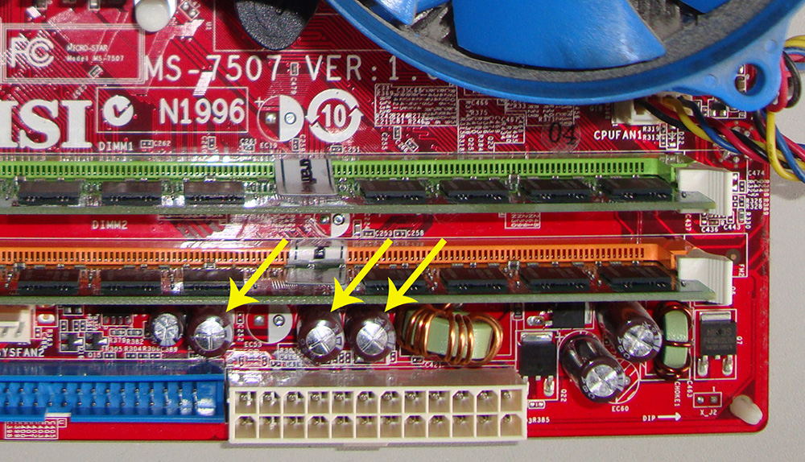
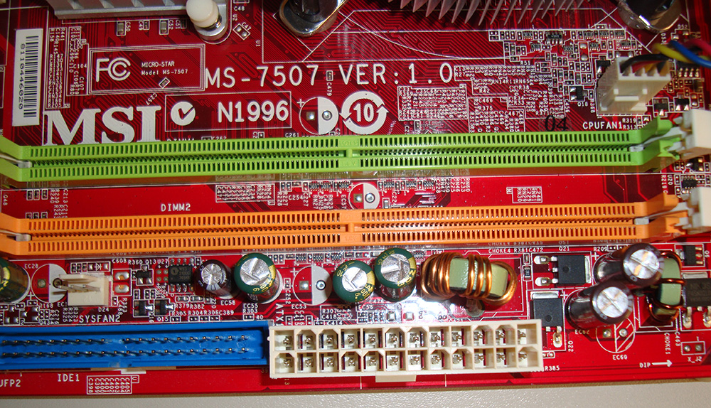
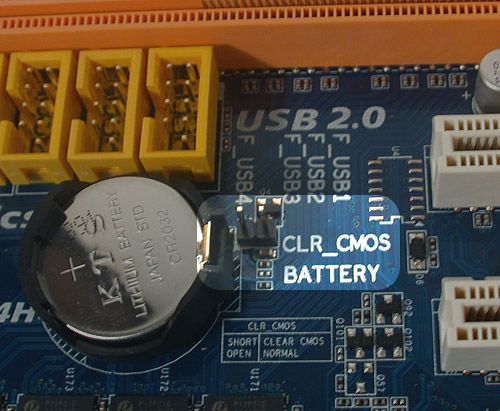
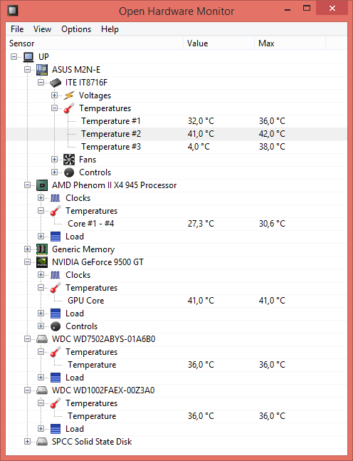
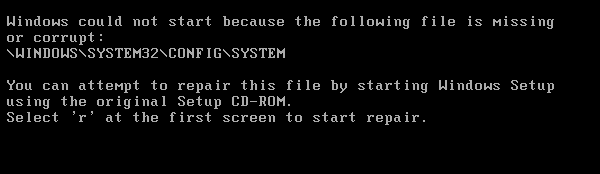
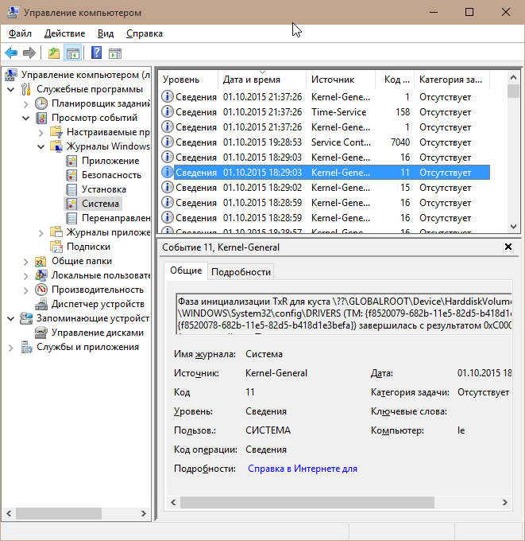

Компьютеры – довольно капризное устройства, то они зависают, то сами по себе перезагружаются или возникает так знакомый каждому пользователю Windows синий экран смерти (или печальный смайлик). Причин тому может быть множество. Сбои делятся на программные и аппаратные. В этой статье попробуем разобрать основные причины компьютерных сбоев и методы их устранения.
Самая частая аппаратная проблема. Плохой конденсатор может никак не сказываться на работе, а может вызывать сбои и зависания вплоть до того, что система не будет включаться. Их легко найти и нетрудно заменить, нужен только паяльник и желание, впрочем подойдёт и знакомый, умеющий паять или сервис-центр, где за небольшую плату вам заменят конденсаторы.
|  Вздутые ёмкости легко найти |  ...и заменить |
Продвинутые радиолюбители возможно скажут, что я сильно упрощаю проблему с конденсаторами и будут правы, но в большинстве случаев такой визуальной диагностики с перепайкой вздутых ёмкостей достаточно, а более сложная диагностика и ремонт комплектующих требует специального оборудования и навыков радиоинженера
Чаще всего горит из-за наведённого электричества или дефектного свитча. Если сгорела встроенная сетевая карта, установите отдельную сетевую карточку, а встроенную отключите в BIOS. Если её не отключить, то компьютер может зависать при загрузке
Блок питания напрямую влияет на стабильность и срок жизни комплектующих. Из-за некачественного блока питания чаще всего ломаются жёсткие диски. Проблема с блоком питания может проявляться в виде внезапных перезагрузок или выключений компьютера. Иногда он может реагировать на кнопу питания не с первого раза.
Блок питания должен быть известных марок: FSP, Thermaltake, OCZ, Corsair, Zalman, Cooler Master. Хороший 700Вт блок стоит около $100. Советую брать блок с отстёгивающимися кабелями – это удобно.
Не рекомендую: Powerman - встречал в дешёвых корпусах очень разные по качеству. Gigabyte - блоки питания для неё не профильный бизнес. Лучше их избегать.
Иногда причина нестабильной работы системы кроется в плате расширения. Сегодня в большинстве компьютеров единственной такой платой является видеокарта. Поэтому диагностика сводится к вопросу о работоспособности видеокарты. Проверить её можно специализированными тестами, например FurMark
Разгон – это увеличение тактовой частоты вычислительных блоков компьютера, чаще всего процессора и видеокарты, с целью повышения производительности. Почти любой компьютер можно немного разогнать без потери стабильности. Однако не всегда проблемы появляются сразу. Если ваша система разогнана и вы наблюдаете сбои, проверьте свой компьютер стресс тестами на стабильность, например тем же FurMark, если проблема в разгоне, то система должна зависнуть или перезагрузиться. Главное следите за температурой GPU, желательно, чтобы она не доходила до 100ºС
Некачественная память очень неприятная вещь. Проблемы могут вылезти в виде синих экранов, причём код ошибки вам может ничего не дать. Проявляется дефектная память очень разнообразно, но проверить её можно во первых через встроенный тест быстродействия в WinRAR (можно даже в пробной версии) или тот же FurMark. Вариант продвинутый - memtest.
Иногда процессор может каким-то неведомым образом терять контакт с гнездом. Чаще всего видел такое с Pentium 4 S478 и с AMD. Решение очень простое: вытащить процессор и снова вставить его.
Компьютеры по-разному реагируют на севшую батарейку. Иногда просто сбиваются часы, а бывает, что вообще не включаются. Решение: заменить батарейку. Обычно она выглядит как таблетка
Эта перемычка служит для сброса BIOS Если переключить эту перемычку в положение CLR CMOS, то компьютер перестанет реагировать даже на кнопку питания. Как она может оказаться в положении сброса? Кто знает... Просто иногда так оказывается.
Перемычка обнуления bios рядом с батарейкой
На фотографии перемычка имеет 2 штырька, на других материнских платах может быть 3, тогда положение 1-2 обычно означает рабочий режим 2-3 – режим сброса
Обычно больше всего греется процессор, северный и южный мосты и видеокарта. Если греется видеокарта, значит её пока снять и почистить, если процессор, то возможно засохла термопаста или также нужно почистить кулер. Если процессор Pentium 4 с сокетом 478 (не смейтесь, на них ещё долго будут работать), то проверьте крепления кулера, они часто ломаются у этой модели и радиатор перестаёт плотно прилегать к поверхности процессора. Если греются мосты, то на них нужно поставить радиатор. Узнать температуру процессора, видеокарты и жёстких дисков можно с помощью программы Open Hardware Monitor
Здесь всё хорошо
Диски портятся – это факт. Диск после 3-4 лет интенсивной работы не так быстр, как после покупки, а если это системный диск, то сбои на нём могут проявляться в виде зависаний при загрузке, очень долгой загрузки, падения системы из-за ошибок ввода-вывода. Решение - запустите встроенную в ОС проверку диска или воспользуйтесь специальной программой. Если диск на гарантии, то лучше сразу менять.
Windows устроен так, что любой драйвер может свалить систему в синий экран. Начиная с Windows Vista, дело обстоит несколько лучше, но по прежнему эта проблема встречается..
Большинство проблем с драйверами решается их обновлением. При сбоях драйверов дискового контроллера или ntfs/vfat стоит проверить диск на наличие ошибок.
PAGE_FAULT_IN_NONPAGED_AREA - это наверное самая часто возникающая ошибка, связанная с тем, что некая программа залезла в недопустимую область памяти или запросила данные, которых нет. Причины этого сбоя очень разнообразны. Если стало повторяться часто, лечится переустановкой Windows. Иногда антивирусы вызывают такой сбой. Ещё одна причина сбоев, связанных с ядром Windows – пиратский Windows с плохим активатором
Если реестр повреждён, то вы можете наблюдать следующую картину:

Обычно это связано со сбоями при записи на диск, например при скачке напряжения. Иногда этот сбой легко исправляется с помощью загрузочной флешки, но бывает, что лечится только переустановкой Windows.
Большинство современных вирусов никак не проявляют себя в работе потому что их цель кража информации, а не поломка системы. Но есть и вирусы, служащие для создания ботнетов, например для распределённого взлома паролей, DDoS атак или даже для добывания криптовалюты bitcoin. Такой вирус будет использовать 100% ресурсов вашего компьютера из-за чего он начнёт сильно тормозить
Есть определённая категория программ, устанавливающая в систему свои модули ядра для низкоуровневого взаимодействия с ОС или оборудованием. К таким программам относятся все эмуляторы CDROM, антивирусы, программы для разметки дисков, фаерволы, некоторые системы защиты от копирования, виртуальные устройства. Самая распространённая проблема от такого ПО – синий экран. Чтобы определить какая именно программа вызвала ошибку, зайдите в системный журнал:
Панель управления → Администрирование → Управление компьютером
Обращайте внимание на колонку Уровень. На этом скриншоте нет ошибок, но если вместо «Сведения» появится «Ошибка» или «Критический», проверьте ей содержимое. Иногда это помогает определить причину сбоя.
Это может и не все возможные сбои, но я постарался собрать наиболее распространённые проблемы. В других статьях эти проблемы ещё будут рассматриваться подробнее с примерами и пояснениями, сама статья, возможно, будет дополняться. А пока, надеюсь эта статья кому-то поможет понять почему компьютер вдруг стал работать нестабильно.
Очень многие проблемы, связанные с компьютером, можно предотвратить, если купить к нему ИБП. Не пожалейте $100 на него, если конечно у вас не ноутбук.
{kind=link}
{kind=link}
{kind=link}